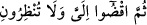
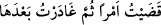
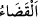
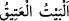

kısaltmak, tırnakları kesmek, koltuk altı kıllarını yolmak ve tıraş etmek sûretiyle
kirlerini izâle etsinler.
“
” kir, pis demektir. Saçın başın dağılması, tırnakların uzaması ve benzeri
tiksinilen şeylere de denir.
Rağıb der ki: “
” in aslı, tırnak kiri ve diğer bedenden temizlenmesi gereken
pisliklerdir. “
”, bir işi gerek söz ve gerekse fiil olarak yerine getirmek, hükme ve
karara bağlamaktır. Bunlardan her ikisi de ilâhî ve beşerî olmak üzere iki türlüdür. Bu
âyette geçen de beşerî olan kabilindendir. Nitekim şu âyette de durum aynıdır:
“
(Nuh:) Bundan sonra (vereceğiniz) hükmü, bana uygulayın ve
bana mühlet de vermeyin.” (Yûnus, 10/71)
Şâirin şu sözü de aynı şekildedir:
Birçok işleri yerine getirdim, ardından onları terk ettim.
“
”nın söz ve fiil olarak birlikte olması da muhtemeldir. Nitekim el-Müfredât’ta
böyle geçmektedir.
“Adaklarını yerine getirsinler.” Adak (nezr), vâcib olmayan bir şeyi kendisine vacib
hâle getirmektir. Buradaki “adaklar” ile hacıların hac günlerinde adadıkları hayırlı
ameller kasdedilmiştir. Çünkü bir kimse hac ve umre yaptığında, hac kurbanı ve diğer
bazı amelleri kendisine vâcib kılar. Eğer o kimse bunları kendisine vâcib kılmasaydı
hac bunları îcab ettirmeyecekti. Bir kimsenin mutlak olarak yaptığı adakları varsa onları
Mekke ehline tasadduk etmesi efdaldir.
“Ve o Eski Ev’i (Kâbe’yi) tavaf etsinler.” Bu tavaf, kendisiyle hac yasaklarının
ortadan kalktığı haccın rüknü olan tavaftır (ziyâret tavâfı). “Kirlerini gidersinler”
ifâdesi de onu göstermektedir. Kâbe’ye
“
Eski Ev” denilmiştir. Çünkü, yeryüzünde insanlar için ilk kurulan ev/mâbed
odur (bk. Âl-i İmrân, 3/96). Ya da o, zâlim ve zorbaların tasallutundan âzâde kılınmış
demektir. Nice zorbalar onu yıkmak için harekete geçmiş, fakat Allah onu korumuştur.
Haccâc Sekafî’nin ise esas maksadı Kâbe’ye tasallut etmek değil, İbn Zübeyr (r.a.)’ı
oradan çıkarmaktı. Ebrehe, Kâbe’ye saldırmak ve yıkmak için yola çıktı da başına neler
geldi neler.
Bil ki hac ile ilgili tavaflar üç tanedir:
1- Kudûm tavafı. Bu, Mekke’ye ayak basan kimsenin Kâbe’nin etrafını yedi kez
dolaşarak yaptığı tavaftır. İlk üç şavtta Hacer-i esvedden başlayıp yine ona varana
kadar remel[26] yapar. Sonraki dört şavtı normal yürüyerek edâ eder. Bu tavaf sünnettir.
Terkinden dolayı bir cezâ yoktur.
2- İfâza tavafı. Kurban günü şeytan taşladıktan ve tıraş olduktan sonra yapılan
tavaftır. Ziyaret tavafı da denir. Bu tavaf haccın rükünlerindendir. Bu tavaf yapılmadan
ihram yasakları kalkmaz.
3- Vedâ tavafı. Mekke’den sefer mesafesi kadar bir yere ayrılıp gitmek isteyen